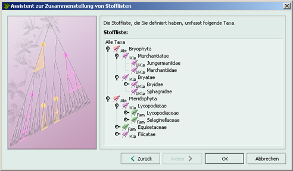

Schritt 5: Ergebnis betrachten
Im letzten Schritt können Sie die neue Stoffliste betrachten, durchsuchen und überprüfen, ob sie
Ihren Wünschen entspricht. Falls noch Änderungen gewünscht werden, können Sie im Assistenten
zum betreffenden Schritt zurückkehren.
